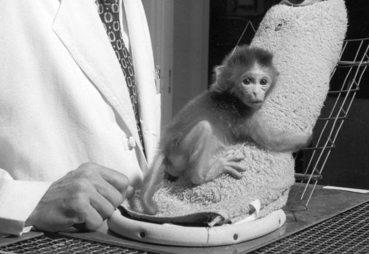
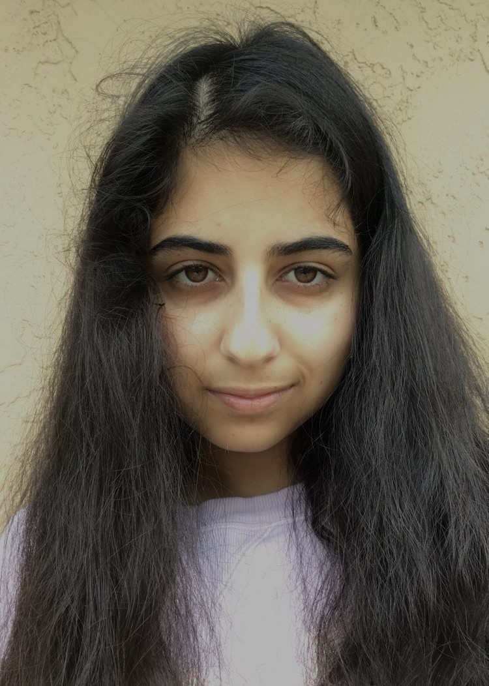

Harlow’s maternal monkey business
Mehri Sadri. 8/19/2020

A baby monkey finds a bond with an inanimate object, which serves a mother role to the previously isolated animal. (Association for Psychological Science))
A baby monkey finds a bond with an inanimate object, which serves a mother role to the previously isolated animal. (Association for Psychological Science))
When asked about the most influential person they know, most individuals would name a family member -- whether it be mom, dad, aunts, or uncles. The bonds we create with family members are usually our strongest, and they are not broken easily. However, these bonds are not only present in humans, but also with other species. Harry Harlow, a developmental psychologist, was able to explore these attachments and endearments through experiments with baby monkeys. His animal experiment, which was performed in the mid-1900s, is still regarded as one of the most famous psychology studies ever.
Harry Harlow was an American psychologist who is most famous for his experiments regarding maternal attachment. He was determined to explore mother-child attachments and decided to test his theories using the rhesus monkey species. Using animals to experiment is a common practice in not only psychology, but other branches of science too, and whether it is ethical or not is something that has been debated for many years. Nonetheless, Harlow executed his series of experiments on these monkeys, pulling some monkeys away from their mothers within 90 days of birth and comparing them to counterparts that were given normal maternal interaction. Taking this a step further, he introduced a “surrogate mother,” actually an inanimate object, to the monkeys who were taken away from the biological parent. Harlow had the idea that if he did this, the experimental monkey would treat the surrogate mother as a real one, as it hadn’t developed any meaningful relationship with their real mother.
Any sort of “bond” can have a different origin. For example, some bonds may be from instant, one-time situations, or maybe from a long-term relationship between two individuals. Harlow understood different reasons why a bond would occur and hoped to figure out how baby and mother monkeys attained them. He wondered whether the attachment was due to milk, and was able to calculate this by allowing the surrogates to provide nourishment.
Harlow created two different types of surrogate mothers for this experiment. One was made out of hardwood and wire, making it not soft enough for comfortable cuddles. The other surrogate was made out of terry cloth, meaning that it was a little softer for any intimacy. After experimenting, Harlow found that although both surrogate mothers seemed somewhat attractive to the monkeys, the soft, cloth pseudo parent was more favorable among the newborns.
After testing nourishment with the fake parents, it was found that although both surrogate mothers provided equal amounts of milk to their “children,” the baby monkies had very different reactions when presented with stressors. The monkeys who had the soft cloth mothers were extremely attached to ‘her,’ and gripped onto the surrogate in stressful situations. On the other hand, the rough, wire mother did not stick with the monkey during the presented stressors, and the monkey instead threw themselves on the floor, rocked back and forth, and overall expressed extreme discomfort on their own.
From the results of his experiment, Harlow was able to make some pressing conclusions about how intimacy plays a role in mother-child bonds. He found that both physiological needs and emotional needs play important roles in crucial attachments, as although both surrogate mothers gave milk, they did not both provide monkeys with a way to escape the presented stressors during the experiment. It also gave a tentative period to when these lifelong attachments are made. For monkeys, Harlow predicted a 90 day period after birth. For humans, this has been translated into the first six months of life.
As mentioned before, Harlow’s experiment with live animals contributed to an ethical dilemma within the psychology community. Maternal deprivation can prove to have serious consequences for not only humans but other animals as well. Lots of people have deemed Harlow’s experiments as cruel towards the monkeys, as they were ripped away from their mothers at infancy and left to create bonds with inanimate objects. There is long-term emotional harm that comes with being isolated from parents, further adding to the reasons why Harlow’s experiment was wrong. Whether an animal’s emotional harm is major or not is still being debated by the psychology community; however, either way, Harlow continues to be an influential scientist through his calculated experiments.
Cover Photo: (Martin Rogers / Getty Images)

Mehri Sadri
Mehri is a rising senior at Scripps Ranch High School in San Diego, California. Although she has always been more inclined in humanities subjects, Mehri has found a love for combining science and art and their practicalities, and hopes to spread this same love to others with her articles.